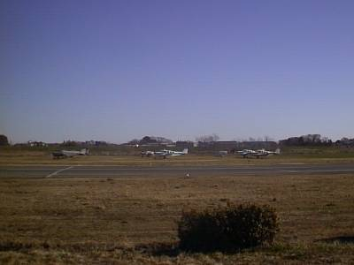
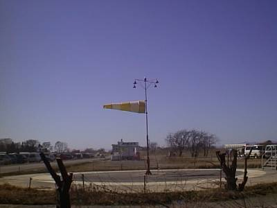
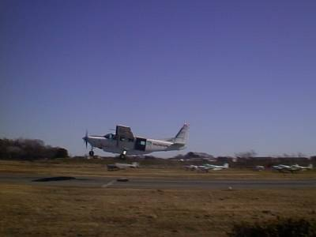
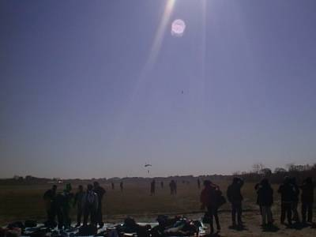
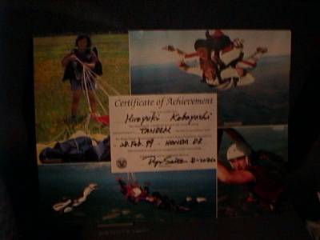
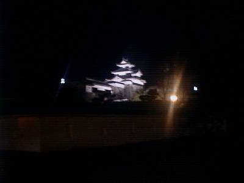

my treasure box
－1999/2/28－
ついにきた！！ 待ちに待ったスカイダイビング。この放浪生活のメインイベントであります。無事に終了することを祈りつつ・・・
| ○埼玉県比企郡川島町 発 |
| ＝＞ 国道１７号線 －＞ 国道４号線 ＝＞ |
| ○福島県郡山市 着 |
～スカイダイビング～

ここは埼玉県にある本田エアポート。この地区一帯がアウトドアスポーツの場となっていて、スカイダイビングのほかにも、ヘリコプターが飛んでいたり、隣でオフロードバイクのコースがあったりで、様々な種類のエンジンの轟音が鳴り響いていました。

この日は風が強かったのですが、スカイダイビングは決行です。

私が乗るセスナの飛び立つところです。私はこれ以前に飛行機に乗ったことはありません。まさか飛行機初体験がセスナで、さらにそこから飛び降りることになろうとは・・・。

これはパラシュートが開いて地上に降りてくるところの写真です。ちょっと見づらいかもしれませんが。空から人間が落ちてくる様は地上からでも見ることができます。米粒ほどのセスナから、パラパラと人が落ちてきて、その後色とりどりのパラシュートの花が咲きます。まさに花が咲くような感じです。
当然ながら実際に飛んでいる写真はありません。
感想は・・・サイコー！！

とはいっても、「本当に飛んだのか？」と言われかねないので、"Certificate of Achievement"そのまま訳すと、「功績証明書」の写真を、そろそろ生活感が現れ始めたミラ号車中で撮ってみました。
～小峰城～

福島県に入ると、４号線の車中からも小峰城をみることができます。特に夜はライトアップされているため幻想的です。所詮デジカメですので夜間撮影はちょっとつらいですね。
この日は那須温泉にも入ることができ、素晴らしい一日でした。